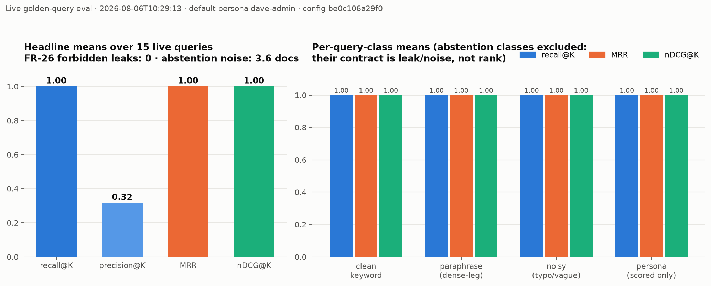
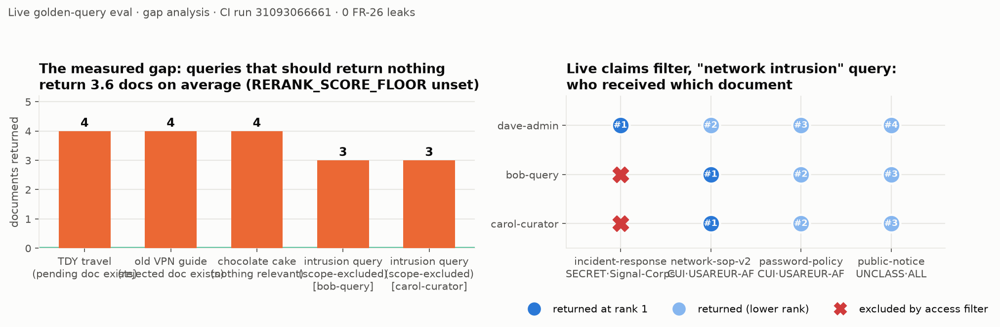
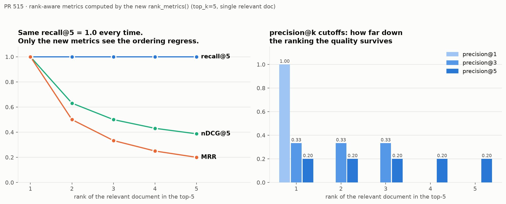
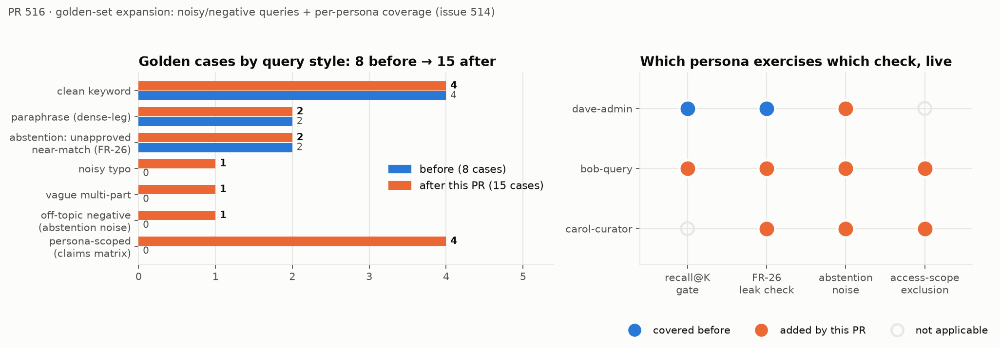
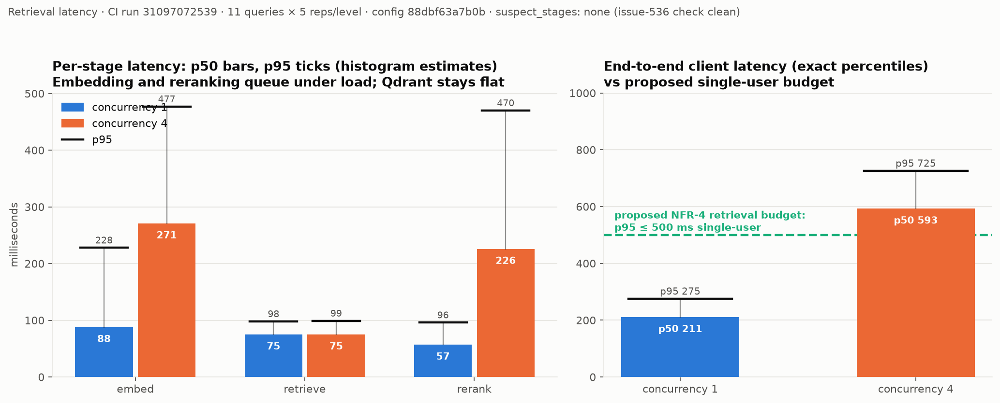

Evaluation & performance baselines¶
Every number on this page was measured against a live stack — real embeddings, real hybrid retrieval, real per-persona tokens — in CI, and is tied to the run and config fingerprint that produced it.
-
1.0 — recall@K · MRR · nDCG@K
Every scored golden query returned its target at rank 1, including typo, vague, and non-admin-persona cases.
-
0 — forbidden leaks (FR-26)
No pending, rejected, superseded, or out-of-scope content reached any persona. The access filter held, live.
-
3.6 docs — abstention noise
The one measured defect: off-topic queries return ~4 confident irrelevant documents. Fix: calibrate
RERANK_SCORE_FLOOR. -
275 ms — retrieval p95, single user
End-to-end on a shared CI runner; 725 ms at 4-way concurrency. Proposed budget: p95 ≤ 500 ms / ≤ 1 s.
Retrieval quality¶
15 golden cases — clean, paraphrase, typo, vague multi-part, abstention, and
per-persona coverage — against the 7-document dev corpus
(run 31093066661 · config be0c106a29f0 · nomic-embed-text).
| Metric | Value | In one line |
|---|---|---|
| recall@K | 1.0 | no misses anywhere |
| MRR / nDCG@K | 1.0 / 1.0 | perfect ordering — the ceiling future runs regress from |
| precision@K | 0.32 | corpus-size artifact, not a defect |
| FR-26 leaks | 0 | across every persona |
| abstention noise | 3.6 | the open gap — see below |

Two readings worth spelling out:
- Precision 0.32 is arithmetic, not quality — with only 4 retrievable
documents at
top_k=5, almost everything comes back. It becomes a real signal once the corpus-scale work adds distractor documents. - The access-scope leg was proven live:
bob-queryandcarol-curatorhold the clearance and releasability the Signal-Corps SECRET document requires — group scope alone excluded it, every time.
Gap analysis — the working dashboard (chart)

Left: each bar is a should-return-nothing query and how many documents it got anyway — after floor calibration these collapse to the green zero line. Right: who received which document; any red ✕ turning into a dot is an access-control regression visible at a glance.
Why rank-aware metrics exist (chart)

Set-membership recall scores rank 1 and rank 5 identically; MRR and nDCG
don't. This demo is computed by the harness's own rank_metrics().
Golden-set composition and persona coverage (chart)

Performance — latency and scaling (NFR-4)¶
11 queries × 5 reps per concurrency level (run 31097072539, shared GitHub runner — treat the stage split and trend as the signal; absolute numbers need one run on representative hardware).
| Stage | 1 user (p50 / p95) | 4 users (p50 / p95) |
|---|---|---|
| embed | 88 / 228 ms | 271 / 477 ms |
| retrieve (both legs) | 75 / 98 ms | 75 / 99 ms |
| rerank | 57 / 96 ms | 226 / 470 ms |
| end-to-end | 211 / 275 ms | 593 / 725 ms |

- Bottleneck under load: the CPU-bound model services queue (embed ~3×, rerank ~4×) while the vector store stays flat at ~75 ms.
- Scaling levers, in order: embedding replicas → reranker replicas → vector store last.
Proposed NFR-4 starting budget
Retrieval-side p95 ≤ 500 ms single-user, ≤ 1 s at 4 concurrent — today's shared runner already has 45% / 27% headroom under those lines. Generation is budgeted separately (it belongs to the chat plane).
How the pieces fit¶
flowchart LR
G["golden sets<br/>15 + 4 persona cases"] --> E[evaluate_retrieval.py]
G --> B[benchmark_latency.py]
E -- "per-persona tokens" --> K[Keycloak]
E -- query --> M["orchestration-mcp<br/>/debug/rag_search"]
B -- load --> M
B -- "histogram deltas" --> X["/metrics"]
M --> S["ollama · qdrant · reranker"]
E --> R["reports + trend store<br/>(config-fingerprinted)"]
B --> R
CI["e2e.yml — nightly /<br/>needs-e2e label"] -.runs.-> E & BGates (fail the build): recall miss · recall/precision regression · FR-26 leak. Advisory (tracked until their noise floor is known): MRR · nDCG · precision@k · abstention noise · latency. The document lifecycle these harnesses exercise is in the architecture tour.
Reproduce it¶
The turnkey path — the seeded corpus and personas the gates expect are already there:
docker compose up -d --wait
docker compose --profile eval run --rm eval-retrieval # quality + leak gate
docker compose --profile eval run --rm benchmark-latency # latency benchmark
The released scripts image ships both harnesses, and the chart enables
/debug/rag_search by default. Run one-off pods inside the cluster:
kubectl run eval-retrieval --rm -it --restart=Never \
--image=ghcr.io/schuecl/nexus-rag/scripts:X.Y.Z \
--env ORCHESTRATION_MCP_URL=http://<release>-orchestration-mcp:8002 \
--env KEYCLOAK_URL=http://<your-keycloak-svc>:8080 \
--env RAG_APP_KEYCLOAK_CLIENT_SECRET=<rag-app client secret> \
-- python3 evaluate_retrieval.py
kubectl run benchmark-latency --rm -it --restart=Never \
--image=ghcr.io/schuecl/nexus-rag/scripts:X.Y.Z \
--env ORCHESTRATION_MCP_URL=http://<release>-orchestration-mcp:8002 \
--env KEYCLOAK_URL=http://<your-keycloak-svc>:8080 \
--env RAG_APP_KEYCLOAK_CLIENT_SECRET=<rag-app client secret> \
-- python3 benchmark_latency.py
Air-gapped: same commands with your internal registry prefix — the
scripts image is one of the five in every release bundle.
The golden gate assumes the dev fixtures
Its pass/fail contract targets the seeded sample corpus and
dev-realm personas. Against a production realm, run in a staging
namespace with those fixtures loaded — or bring your own golden set
(--golden-set / --persona-set, EVAL_PERSONA). The latency
benchmark has no corpus expectations and is meaningful against any
populated deployment: its numbers on your hardware are exactly what
the NFR-4 budget wants.
Reports carry a config fingerprint (models, floor, chunking, golden-set hash, persona) — compare runs only within a fingerprint; cross-config comparisons are refused or loudly annotated by design.
Sources¶
scripts/evaluate_retrieval.pyandscripts/benchmark_latency.py— the harnesses; their docstrings define every metric and gate- Testing & CI quality gates — the gated-vs-advisory convention and re-evaluation policy
- CI runs 31093066661 (quality) and 31097072539 (latency) — the artifacts behind every number above